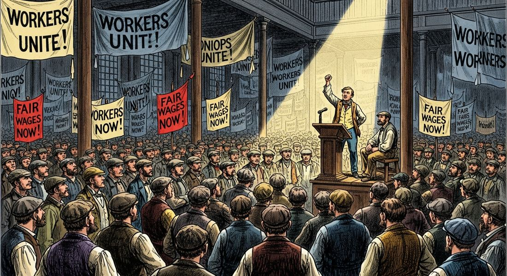
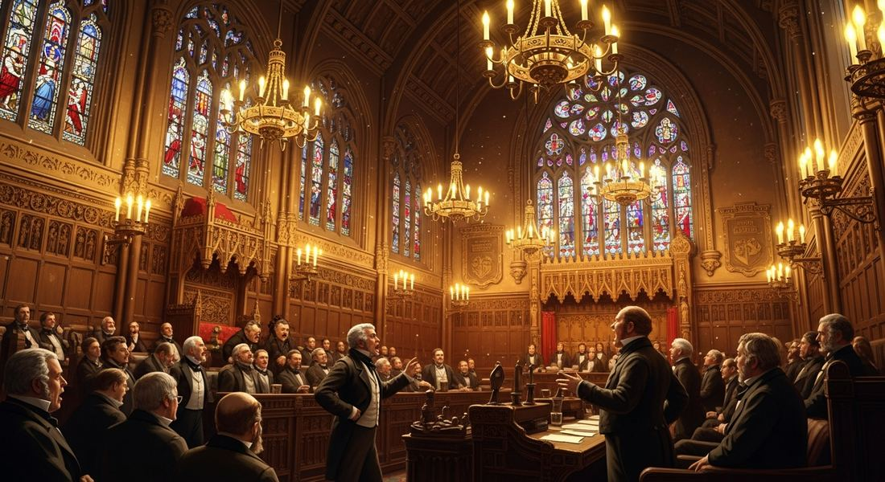

5.8 Reactions to the Industrial Economy, 1750–1900
- LO-A: Karl Marx and socialist ideas: Marx argued that all of history was driven by class struggle, the conflict between those who own the means of production (the bourgeoisie, or capitalist class) and those who sell their labor (the proletariat, or working class). Under industrial capitalism, workers were exploited: they created value but received only wages, with the difference (surplus value) going to factory owners as profit. Marx predicted that this exploitation would eventually produce a revolution in which the proletariat overthrew the bourgeoisie and established a classless communist society. Socialist and communist parties formed across Europe based on these ideas. (1) Labor organizing: workers formed unions and political parties to demand better wages, shorter hours, and safer conditions; the Chartist movement in Britain, the Knights of Labor in the US. (2) Political/ideological challenges: socialists argued that capitalism itself was unjust; Karl Marx (Communist Manifesto 1848, Das Kapital 1867) argued that industrial capitalism exploited workers and would eventually be overthrown by a workers' revolution; utopian socialists like Robert Owen tried cooperative communities. (3) Government reforms: some governments (especially Britain) responded with factory laws, child labor restrictions, and urban improvements, trying to reduce industrial abuses without replacing capitalism. Reform in Asia and Africa: defensive modernization continues: In response to the expansion of industrializing Western powers, the Ottoman Empire and Qing China both attempted significant reform programs. The Ottoman Tanzimat reforms (1839–1876) modernized laws, the military, and administration. China's Self-Strengthening Movement (1861–1895) tried to modernize the military and industry while keeping Confucian social values. Both faced resistance from conservative elites who feared that reform threatened traditional power structures. Both ultimately had limited success, leaving both empires vulnerable to Western pressure.
Try each question before revealing the answer.
1. Early industrial factories had 14–16 hour workdays with no breaks, no safety protections, and no minimum wage. Why would workers agree to work in such conditions, and what would motivate them to eventually organize for better conditions?
2. Karl Marx argued that workers were "exploited" under capitalism. What did he mean by this, specifically?
3. Britain passed the Factory Acts (1833, 1844, 1847) limiting child labor and working hours. Why would the government pass such laws rather than letting the "free market" determine wages and conditions?
4. China's Self-Strengthening Movement tried to "adopt Western technology while keeping Chinese values." Why might this be a difficult balance to maintain?
5. Marx predicted that workers' revolution was inevitable. Why have most industrialized democracies not had communist revolutions, as Marx predicted?
- Explain the causes and effects of calls for changes in industrial societies from 1750 to 1900.
Tap a term for its definition.
-
Definition: An organization of workers that collectively negotiates with employers for better wages, hours, and working conditions. Significance: The primary vehicle for working-class demands within the industrial capitalist system; gave workers bargaining power they lacked individually.
-
Definition: German philosopher and economist (1818–1883) who argued that history is driven by class struggle and that industrial capitalism exploited workers, predicting an inevitable workers' revolution and the establishment of communism. Significance: His ideas ( Communist Manifesto 1848, Das Kapital 1867) became the intellectual basis for socialist and communist parties worldwide.
-
Definition: A political and economic philosophy arguing that the means of production (factories, resources) should be owned collectively or by the government rather than by private individuals. Significance: Offered an alternative to laissez-faire capitalism; socialist parties formed across Europe and demanded workers' rights, public ownership, and redistribution of wealth.
-
Definition: Marx's vision of a classless society in which the means of production are owned communally and all people contribute according to ability and receive according to need. Significance: The end goal of the workers' revolution Marx predicted; became the ideology of the Soviet Union (1917) and other 20th-century revolutions.
-
Definition: Marx's terms for the two main classes of industrial capitalism: the bourgeoisie (the capitalist class, owners of factories, land, and financial assets) and the proletariat (the working class, who sell their labor). Significance: Central to Marxist analysis of industrial capitalism as a system of class conflict.
-
Definition: A series of Ottoman government reforms (1839–1876) modernizing the legal system, military, and administration on Western models, including equal rights for non-Muslim subjects. Significance: CED required context, the Ottoman government's attempt to modernize in response to Western expansion; resisted by conservative elements and ultimately limited in effectiveness.
-
Definition: A reform program in Qing China (1861–1895) that sought to adopt Western military and industrial technology while preserving Confucian social and political values. Significance: CED required context. China's attempt to modernize without fundamentally changing its social structure; limited by conservative resistance and ultimately ended by China's defeat in the First Sino-Japanese War (1895).
-
Definition: British legislation (1833, 1844, 1847) limiting the working hours of women and children in factories, establishing minimum ages for child labor, and requiring basic safety measures. Significance: Examples of governments using legislation to reduce industrial abuses, responses to working-class demands and public moral outrage without fundamentally challenging capitalism.
⚒️ Workers Organize: Labor Unions and Political Parties
Industrial capitalism created a new kind of workplace: large factories where hundreds or thousands of workers labored under identical conditions set entirely by the factory owner. Workers had no individual bargaining power, any single worker who complained about wages or hours could be immediately replaced from the large pool of unemployed workers in industrial cities.
The response was collective action: workers organizing together so that the factory owner couldn't simply fire or replace them. Labor unions were organizations through which workers negotiated as a group, if the factory owner rejected their collective demands, all workers could strike (refuse to work simultaneously), stopping production until the owner negotiated. One worker quitting was easy to replace; 500 workers striking shut down production and cost the owner far more than the demanded wage increase.
Key examples:
- The Chartist Movement (Britain, 1838–1857): The first large-scale working-class political movement, demanding the vote for working men, secret ballots, and equal electoral districts. Chartists argued that without political representation, workers had no way to change the laws that governed their working conditions. Though the movement failed in the short term, most of its demands were eventually enacted.
- Trade unions in Britain: Skilled workers in specific trades (carpenters, printers, textile workers) organized trade unions to negotiate wages and conditions. Unions were illegal in Britain until 1824; legalized, they grew rapidly across the second half of the 19th century.
- Socialist and labor parties: Political parties explicitly representing working-class interests emerged across Europe in the 1860s–1890s: the Social Democratic Party of Germany (1875), the French Workers' Party, and many others. These parties used electoral politics to push for labor legislation, social insurance, and sometimes more radical economic change.

Labor union meetings brought together industrial workers across specific trades to coordinate demands for better wages and working conditions, collective action that gave workers bargaining power they lacked individually (Google Gemini, 2025), commercially licensed. Labor union meetings brought together industrial workers across specific trades to coordinate demands for better wages and working conditions, collective action that gave workers bargaining power they lacked individually (Google Gemini, 2025), commercially licensed.
📖 Marx and the Challenge to Capitalism Itself
Labor unions worked within the capitalist system. They accepted that factories and private ownership existed, and just demanded a better share of the profits for workers. Karl Marx argued that this wasn't enough. The problem wasn't how capitalism was managed, he said, the problem was capitalism itself.
Marx developed his ideas in the Communist Manifesto (1848, co-written with Friedrich Engels) and expanded them in Das Kapital (Volume 1, 1867). His key arguments:
- Class struggle is the engine of history: All of history is the story of conflict between the class that owns the means of production and the class that has to sell its labor. In ancient societies: masters vs. slaves. In feudal societies: lords vs. serfs. In industrial capitalism: bourgeoisie vs. proletariat.
- Workers are exploited: Workers create more value than they receive in wages, the difference (surplus value) goes to factory owners as profit. This exploitation is not accidental; it is built into the structure of capitalism.
- Revolution is inevitable: Capitalism's inherent contradictions, falling wages, periodic economic crises, growing inequality, will eventually make workers' conditions unbearable. The proletariat will unite, overthrow the bourgeoisie, and establish a new social order without private ownership of production: communism.
Marx's ideas spread rapidly. Socialist parties across Europe incorporated Marxist ideas. The Communist Manifesto's opening line, "A specter is haunting Europe, the specter of communism", captured the fear felt by European ruling classes that workers' revolution was coming. Marx was correct that working-class political movements would grow enormously; he was incorrect that revolution was inevitable in industrialized democracies, where reform proved more common than revolution.
🏛️ Government Reforms: Responding Without Replacing
Some governments chose to respond to the social problems of industrialization through reform rather than by tolerating revolution or waiting for collapse. Britain led in this area, partly because its parliamentary system allowed working-class interests to influence legislation more easily than continental autocracies.
- Factory Acts (Britain, 1833, 1844, 1847): The Factory Act of 1833 prohibited employment of children under nine in textile factories, limited working hours for children aged 9–13, and required some schooling. The 1847 Ten Hours Act limited women and children to 10 hours of work per day, which effectively set a 10-hour day for most factories since they couldn't run profitably with only adult men. These laws established the principle that governments could regulate market labor.
- Public health reforms: Cholera epidemics in industrial cities (1831, 1848, 1866) forced governments to act. John Snow's identification of contaminated water as the source of London's 1854 cholera outbreak led to the construction of London's modern sewer system. The Public Health Act (1875) required local governments to provide clean water and sewage disposal across Britain.
- Urban planning and housing reform: Reformers documented the appalling conditions of industrial slums and pushed for minimum housing standards, parks, and public amenities. Robert Owen established model factory towns with decent housing, schools, and no child labor.
- Educational reform: Compulsory elementary education was established in Britain in 1870, governments concluded that an industrial economy needed a literate workforce and that leaving education to the market produced widespread illiteracy.

Britain's Parliament passed a series of Factory Acts restricting child labor and working hours, government interventions that acknowledged the social costs of unregulated industrial capitalism without challenging the system itself (Google Gemini, 2025), commercially licensed. Britain's Parliament passed a series of Factory Acts restricting child labor and working hours, government interventions that acknowledged the social costs of unregulated industrial capitalism without challenging the system itself (Google Gemini, 2025), commercially licensed.
🌏 Reform in the Ottoman Empire and Qing China
Industrial capitalism and Western expansion also forced reform attempts in non-Western empires, though for different reasons: these were not reactions to internal industrial conditions, but defensive responses to the growing power of industrialized Western states.
Ottoman Tanzimat Reforms (1839–1876): "Tanzimat" means "reorganization" in Turkish. Faced with military defeats, territorial losses, and economic penetration by European powers, the Ottoman government launched a systematic modernization program: new law codes based on European models, reorganization of the military along Western lines, equal legal status for all subjects regardless of religion, establishment of modern schools teaching secular subjects, and expanded infrastructure. The Tanzimat represented genuine reform. But it was resisted by conservatives (including religious leaders and traditional military elites who feared loss of privilege) and eventually undermined by political instability. It stopped short of constitutional government and was partially reversed after 1876.
Qing China's Self-Strengthening Movement (1861–1895): After China's defeat in the Second Opium War (1856–1860), reformers within the Qing government argued that China needed to adopt Western military and industrial technology to resist Western dominance. Their slogan was "Chinese learning for the fundamental principles; Western learning for practical application." They built arsenals, shipyards, and telegraph lines. They sent students to study in the United States and Europe.
But the movement faced a fundamental contradiction: China's governing class derived its status from the Confucian examination system. Modernization that shifted power to technical experts threatened this class's position, and they resisted. When China was defeated by Japan in the First Sino-Japanese War (1895), a recently industrialized non-Western country, it exposed the Self-Strengthening Movement's failure to produce genuine military modernization. The defeat triggered more radical calls for reform, eventually leading to the collapse of the Qing dynasty in 1911.
These videos will help you review Reactions to the Industrial Economy, 1750–1900 and solidify key concepts before your exam.
- A) The alliance between socialist parties and European monarchies against liberal reformers
- B) The religious conflicts between Catholics and Protestants in 19th-century Europe
- C) The specific industrial conditions in Germany that made communist revolution imminent
- D) The revolutionary wave of 1848 that challenged established governments across Europe
- A) A government response to socialist demands for workers to own the means of production
- B) The British government's adoption of Marxist principles about the rights of the working class
- C) Government regulation of specific labor market outcomes that were deemed socially unacceptable, without abandoning the capitalist system
- D) A policy designed to reduce the size of the industrial working class by encouraging child education over factory work
- A) The Ottoman Empire's adoption of socialist economic principles in response to industrialization
- B) The Ottoman government's attempt to modernize its legal and administrative system to strengthen the empire against internal disintegration and Western pressure
- C) Ottoman efforts to exclude European economic influence from the empire's territory
- D) The conversion of the Ottoman government to Enlightenment principles of popular sovereignty
- A) China's reform program had focused on adopting Western military technology without reforming the political, educational, and institutional systems that made Western military power effective
- B) China had imported the wrong types of Western weapons, choosing outdated military technology
- C) China had refused to allow foreign technical experts to train Chinese military officers
- D) The Qing government had spent insufficient funds on industrial development compared to Japan's Meiji government
- A) The success of Marx's prediction that workers' parties would inevitably lead violent revolutions against capitalist governments
- B) The German government's decision to allow socialist parties in exchange for workers abandoning strike activity
- C) The emergence of working-class political parties as an alternative to both violent revolution and acceptance of industrial capitalism as it was
- D) The decline of labor unions as workers shifted their organizing efforts to parliamentary politics
Answer all three parts (A, B, C).
Part A
Identify ONE way workers in industrialized countries organized collectively to challenge industrial capitalism in the period 1750–1900.
Part B
Explain ONE key argument Karl Marx made about industrial capitalism and how it differed from the position of labor union advocates.
Part C
Explain ONE reason why reform efforts in the Ottoman Empire or Qing China were resisted by established elite groups in the period 1750–1900.
Write a thesis before revealing. A strong thesis restates the verb phrase, adds a quantifier, and ends with because [A] and [B].